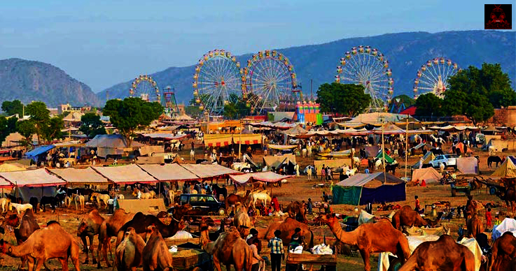
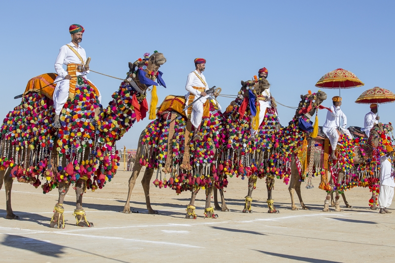
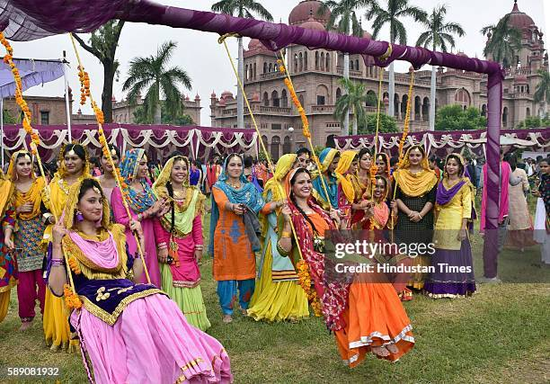
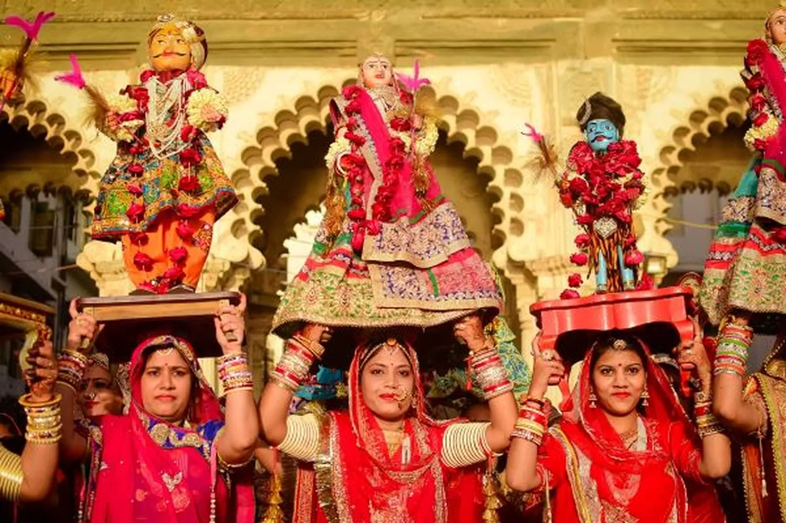
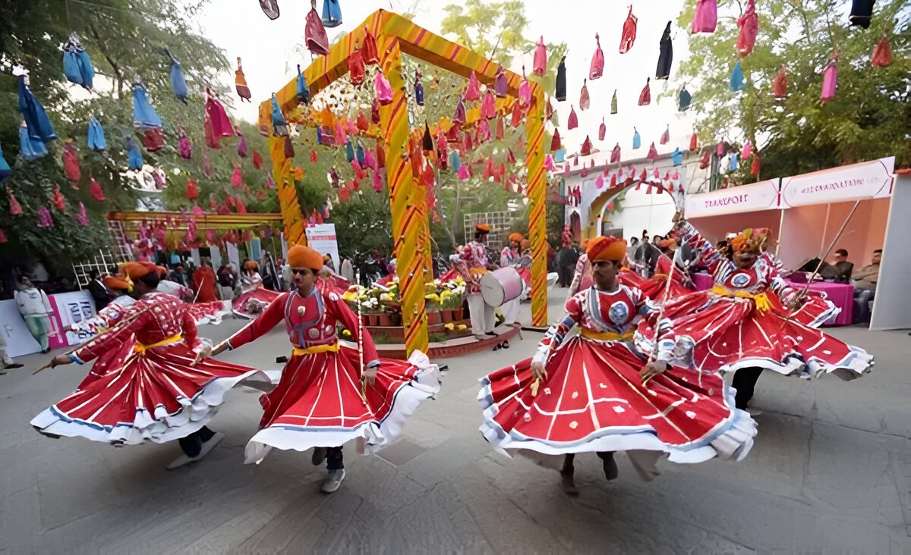
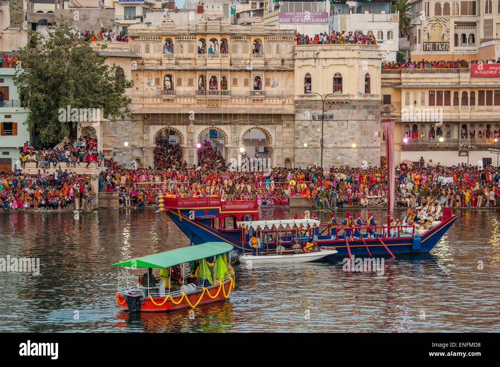
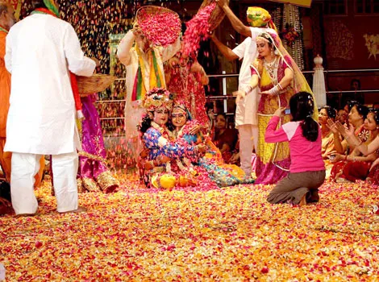
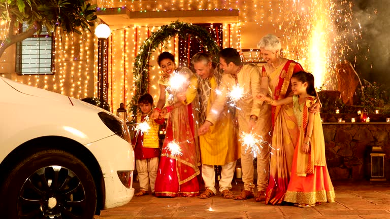

Major Festivals

Pushkar Fair
A world-famous camel and livestock fair held annually in Pushkar with vibrant cultural programs.

Desert Festival
Celebrated in Jaisalmer featuring folk music, dance performances, and camel races.

Teej Festival
A monsoon festival celebrated by women with swings, traditional songs, and colorful attire.

Gangaur Festival
A traditional festival dedicated to Goddess Gauri symbolizing marital happiness and devotion.
Phool Dol Festival
This festival is primarily organized in Shahpura Bhilwara Rajasthan.

Brij Holi Festival
The Braj Holi is world-famous for its unique traditions and unwavering devotion to Lord Krishna.

mewar Festival
The Mewar Festival is an extremely colorful and vibrant cultural celebration held in the Udaipur district of Rajasthan.

Fagun Utsav Festival
The month of Phalgun is primarily dedicated to the love and divine pastimes Leelas of Lord Krishna and Radha Rani.

diwali Festival
According to mythological legends, on this day Lord Shri Ram returned to Ayodhya after completing 14 years of exile, and the people lit ghee lamps (diyas) to welcome him.